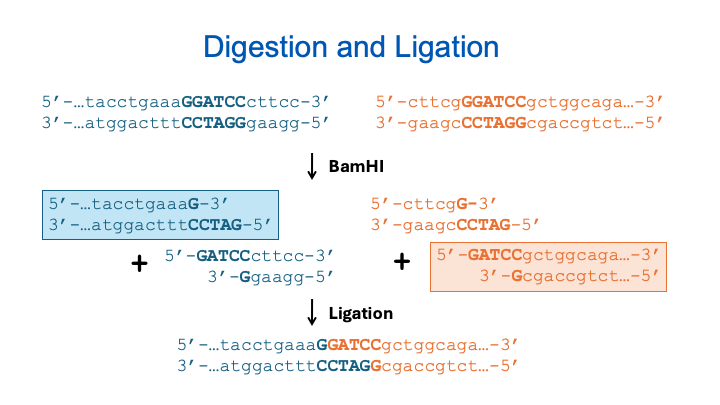

Manual Product Prediction¶
In this module, you'll learn how to predict the results of molecular biology operations by reasoning through the mechanisms. This manual prediction process is foundational for verifying whether a cloning strategy will work as intended. While there are many tools and algorithms to help you design a cloning plan, here we are learning to do it based on first principles. It's a skill you'll often use in the lab when results are unclear and you need to troubleshoot. Going through this process also deepens your understanding of how molecular biology works and how different biochemical elements interact.
Before You Try This...¶
Want a refresher on how PCR works at a mechanistic level? Watch this short, animated video:
üì∫ PCR Animation ‚Äì The Polymerase Chain Reaction
Guided Walkthrough: Predicting PCR Products¶
We’ll begin with a simple scenario using a structured table format called cf_shorthand. You’ll encounter this notation in later tutorials, but here we’ll treat it as a straightforward summary of oligos and templates.
PCR Example¶
operation primer1 primer2 template product
PCR exFor exRev pTemp1 pcrpdt
oligo exFor CAGCGGATCGGATCGGCGAC
oligo exRev CGGTTGTGCGGGCGGAACCAG
plasmid pTemp1 CTGGTGACCCAGCGGATCGGATCGGCGACCCAAAGCGCCTGGTTCCGCCCGCACAACCGCGA
We have two primers (exFor and exRev) and a circular template plasmid (pTemp1). The task is to predict the PCR product.
- Find
exForexactly in the template. - Find the reverse complement of
exRevand match that in the template. - The product includes everything between them (including the primers).
Product Visualization:
PCR with 5' Tails¶
operation primer1 primer2 template product
PCR exFor2 exRev2 pTemp1 pcrpdt2
oligo exFor2 ccataGAATTCCAGCGGATCGGATCGGCGAC
oligo exRev2 cagatGGATCCCTGGTTCCGCCCGCACAACCG
plasmid pTemp1 CTGGTGACCCAGCGGATCGGATCGGCGACCCAAAGCGCCTGGTTCCGCCCGCACAACCGCGA
This example includes 5' tails. Only the 3' ends of primers need to match the template; the 5' ends will be added to the product.
Product Visualization:
Inverse PCR (IPCR)¶
In inverse PCR, primers point outward from a circular template.
- Find forward primer match and set it as new origin.
- Reverse complement the reverse primer and locate its match.
- Predict the sequence between these two primer ends.
Quiz: Predict This Product
operation primer1 primer2 template product
PCR qFor qRev pQ1 quizpdt
oligo qFor ccataCATATGGTTCTTGATTCGATACG
oligo qRev cagatCTCGAGTTAGTGCTGTTCGAGGTCCTG
plasmid pQ1 CACTCAAGGTTCAGGACCTCGAACAGCACTAACGGAAGAAATCCGATGGTTCTTGATTCGATACGTGGCCCCGAGGACCTCGCAT
Simulating Digestion and Ligation¶
Now we’ll simulate a restriction digest followed by ligation. You’ll combine DNA pieces with compatible overhangs created by restriction enzymes.
üñºÔ∏è Visual Overview¶

üìÑ Construction File¶
operation dna enzyme fragment product
Digest blue BamHI 0 blue_dig
Digest orange BamHI 1 orange_dig
operation dna1 dna2 product
Ligate blue_dig orange_dig blue_orange
dsDNA blue tacctgaaaGGATCCcttcc
dsDNA orange cttcgGGATCCgctggcaga
This file specifies:
- What DNA is being cut and where
- Which fragments are retained
- Which are ligated
‚úÇÔ∏è Steps 1 and 2: Restriction Digestion¶
Enzyme: BamHI
Cut Site: G^GATCC → sticky 5' overhang
Each DNA is cut into two fragments:
- From
blue, keep fragment 0 (5' half) - From
orange, keep fragment 1 (3' half)
These fragments are now blue_dig and orange_dig.
üîó Step 3: Ligation¶
blue_digandorange_dighave matching GATC overhangs- They ligate seamlessly via Watson-Crick base pairing
- BamHI site is restored at the junction
üߨ Final Construct Visualization¶
Resulting sequence:
operation dna enzyme fragment product
Digest fragA XhoI 0 fragA_dig
Digest fragB XhoI 1 fragB_dig
operation dna1 dna2 product
Ligate fragA_dig fragB_dig fragC
dsDNA fragA cagtacaagagattcagCTCGAGatacc
dsDNA fragB cgaaaCTCGAGcatagacaggacaacca